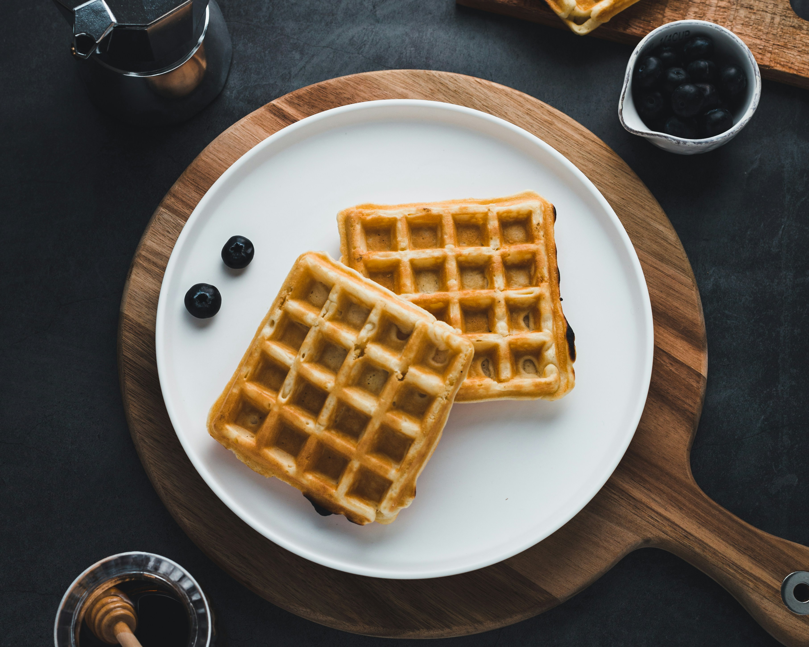

Waffles Recipe

Description
With just basic pantry staples like flour,
eggs, and milk, these waffles require
very little prep.
Ingredients
- 2 cups all-purpose flour
- 1 teaspoon salt or to taste
- 4 teaspoons baking powder
- 2 tablespoons white sugar
- 2 large eggs
- 1 1/2 cups warm milk
- 1/3 cup butter, melted
- 1 teaspoon vanilla extract
Steps
- Gather all ingredients.
- Mix flour, salt, baking powder, and sugar together in a large bowl; set aside. Preheat waffle iron to desired temperature.
- Beat eggs in a separate bowl; stir in milk, butter, and vanilla.
- Pour milk mixture into flour mixture; beat until blended.
- Ladle batter into a preheated waffle iron.
- Cook waffles until golden and crisp.
- Serve immediately and enjoy!
Go Back